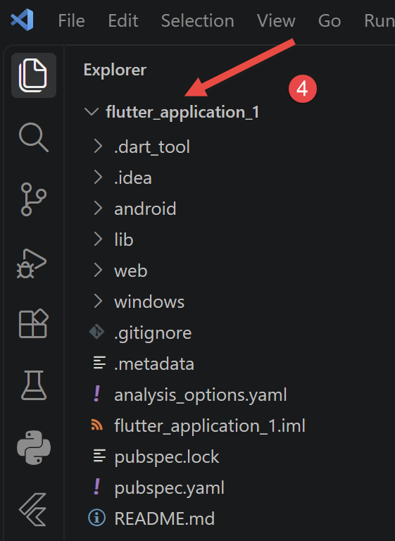
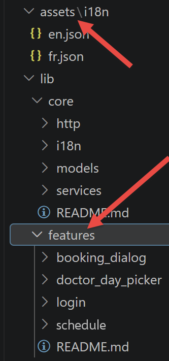
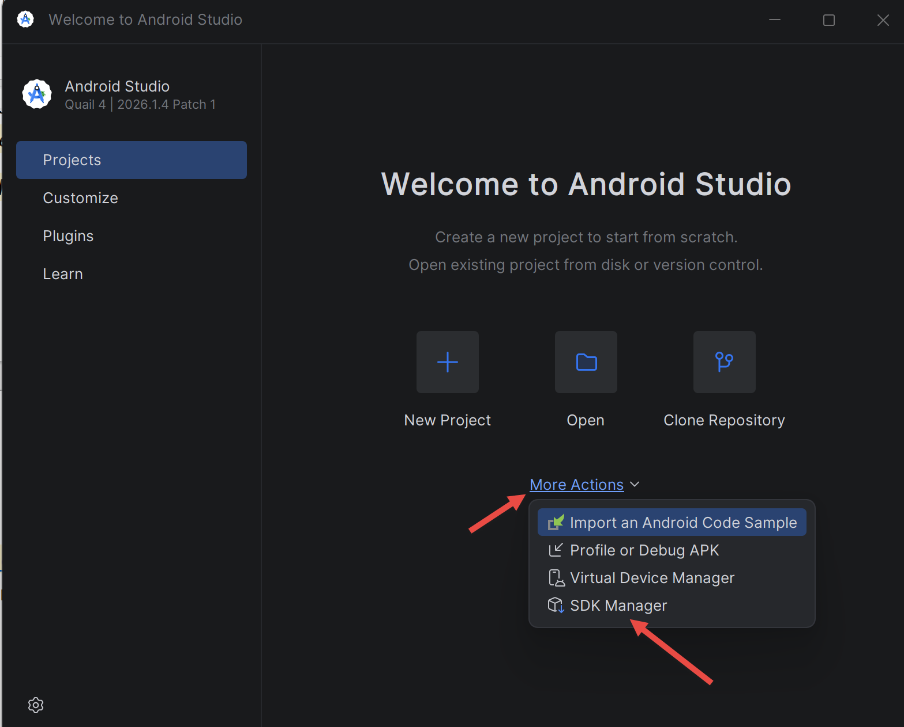
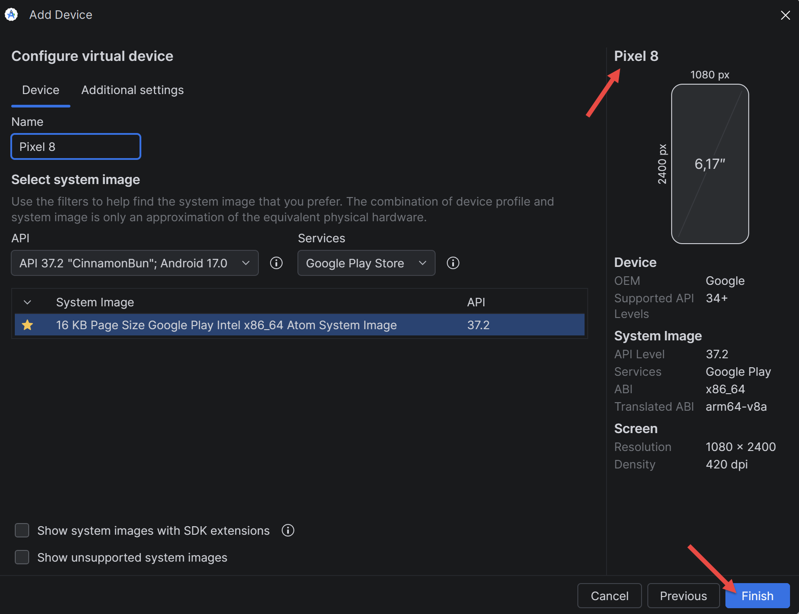

2. Hoofdstuk 1 - De werkomgeving inrichten
2.1. De tools installeren
- Node.js: download en installeer versie 22 (of hoger) vanaf nodejs.org. Controleer de installatie in een terminal:
- Visual Studio Code (VSCode): gratis te downloaden op code.visualstudio.com. Installeer de extensie „TypeScript and JavaScript Language Features” (meestal al inbegrepen).
- [MySQL] 8: installeer bijvoorbeeld via XAMPP, Laragon (onder Windows) of rechtstreeks via [MySQL] Community Server. Een grafische beheertool (phpMyAdmin, [MySQL] Workbench, DBeaver, HeidiSQL…) vereenvoudigt het werk. Verderop wordt de tool Laragon gebruikt.
- Postman: gratis te downloaden op postman.com.
2.1.1. De Flutter-client installeren
Start VSCode zonder een project te selecteren:

- Open in [1-2] het opdrachtenpalet;

- maak in [3] een nieuw Flutter-project aan;

- kies in [4] een lege app;

- geef in [5-6] een map op waarin de submap van het project wordt aangemaakt;

- voer in [6] een naam voor het project in. Dit wordt ook de naam van de map die voor het project wordt aangemaakt;

- geef in [1-3] de doelplatformen van het project op [1 – Android application, 2 – desktop application, 3 – web application];

- in [4] ziet u het aangemaakte project. VSCode downloadt automatisch de Flutter SDK;
Als u de code van dit document hebt gedownload, staat deze in twee mappen:


- in [1] de [Flutter]-client;
- in [2] de [NestJS]-server;
- in [3] de inhoud van [2]. Kopieer al deze inhoud naar de map van uw Flutter-project. Er verschijnen nieuwe elementen in uw project:

De opdracht [flutter doctor] controleert per doelplatform of alles aanwezig is wat [Flutter] nodig heeft. Voer dit uit in een terminal binnen het Flutter-project:
Als alles in orde is, krijgt u een resultaat zoals dit (versienummers kunnen afwijken):
Elke regel begint met een symbool: [√] (alles in orde), [!] (waarschuwing: een element ontbreekt, wat niet per se verhindert dat de code werkt) of [X] (fout). Voor deze cursus zijn de relevante regels [Flutter], [Android toolchain] (compilatie voor een [Android]-telefoon) en [Connected device] (ten minste één gedetecteerd apparaat, namelijk de telefoon). De regels [Chrome] (webdoelplatform) en [Visual Studio] (doelplatform Windows) gelden alleen voor die doelplatformen: een [!] of [X] bij een doelplatform dat u niet gebruikt, kunt u negeren.
Als [Android toolchain] „cmdline-tools component is missing” meldt, installeer dan [Android SDK Command-line Tools] (zie hieronder); als het „Android license status unknown” meldt, accepteer dan de licenties (stap 5). De opdracht [flutter doctor -v] geeft details over elke controle.
U kunt de Flutter-app nu starten, ook als de webservice waarmee de app moet communiceren niet is gestart. Maak eerst een lijst van de apps (apparaten) die Flutter herkent:
In kolom 2 vindt u de id's van de herkende apparaten. Zo start u de Flutter-app op een van deze apparaten:
Zo start u de app bijvoorbeeld in de browser Chrome met de identificatie (chrome):
Dit levert het volgende resultaat op (of een foutmelding over de serververbinding):

Mogelijk hebt u de Android SDK die Flutter nodig heeft nog niet geïnstalleerd. We beschrijven nu hoe u die installeert.
2.1.2. Android Studio en de opdrachtregeltools van Android
Het mobiele doelplatform van deze cursus is een [Android]-telefoon. Om de app te compileren en op deze telefoon te installeren, heeft [Flutter] de [Android] SDK nodig, die wordt geïnstalleerd samen met [Android Studio], de ontwikkelomgeving van Google. [Android Studio] wordt niet gebruikt om code te schrijven (de editor blijft [VSCode]); het wordt hier alleen gebruikt om de [Android] SDK te installeren en bij te werken.
- [Android Studio]: download het gratis vanaf [https://developer.android.com/studio] en installeer het. Wanneer u het voor het eerst start, biedt de wizard een standaardinstallatie aan: accepteer die, dan wordt de [Android] SDK gedownload.

- Open de [SDK Manager] vanuit [Android Studio] (via het menu [Tools / SDK Manager] als een project is geopend, of via [More Actions / SDK Manager] op het startscherm): dit is de tool die de onderdelen van de [Android] SDK installeert en bijwerkt.
- Tabblad [SDK Platforms]: controleer of een recent [Android]-platform is geïnstalleerd (de documentatie van [Flutter] vermeldt op het moment van schrijven versie 36).

- Tabblad [SDK Tools]: vink [Android SDK Command-line Tools (latest)], [Android SDK Build-Tools] en [Android SDK Platform-Tools] (en ook [Android Emulator] als u op een emulator wilt testen) aan en klik vervolgens op [Apply]. De documentatie van [Flutter] adviseert ook [CMake] en [NDK (Side by side)]. Het zijn de pakketten [Android SDK Command-line Tools] die ontbreken wanneer [flutter doctor] „cmdline-tools component is missing” weergeeft.
- Accepteer de licenties voor de [Android] SDK door de volgende opdracht in een terminal binnen het Flutter-project te typen en vervolgens bij elke vraag „[y]” te antwoorden totdat de melding „All SDK package licenses accepted.” verschijnt:
[Note]: Met versie 23.0 van [Android SDK Command-line Tools]kan de bovenstaande opdracht onmiddellijk eindigen, zonder om iets te vragen, en de melding „The --licenses option is no longer needed.” weergeven. Dit is een bekend probleem in [Flutter] (issues 191558 en 191487 op github.com/flutter/flutter). Oplossing: vink in de [SDK Manager], tabblad [SDK Tools], de optie [Show Package Details] aan, vervang versie 23.0 van [Android SDK Command-line Tools] door versie 22.0, klik op [Apply], en voer de opdracht daarna opnieuw uit.
2.1.3. Een Android-emulator aanmaken
Als u geen telefoon hebt, kunt u de app testen op een [Android]-emulator: een virtuele telefoon die in een venster op uw computer draait. [Android Studio] installeert het programma [Android Emulator] (als het is aangevinkt in de [SDK Manager], zie hierboven), maar levert geen kant-en-klaar virtueel apparaat: u moet er zelf een aanmaken.
- [Prerequisite]: virtualisatie moet zijn ingeschakeld in de [BIOS] van de computer en onder [Windows] moet de functie [Windows Hypervisor Platform] zijn aangevinkt ([Control Panel / Programs / Turn Windows features on or off]), waarvoor een herstart nodig is. Anders start de emulator niet of blijft hij zeer traag.
- Open de [Device Manager] vanuit [Android Studio]: [More Actions / Virtual Device Manager] op het startscherm, of [Tools / Device Manager] als een project is geopend (afhankelijk van de versie: [View / Tool Windows / Device Manager]).

- Klik op [Create Device], selecteer een sjabloon (bijvoorbeeld [Pixel 8]) en klik op [Next]. Selecteer een recente [Android]-systeemimage voor de processor [x86_64] en download deze via de koppeling [Download] ernaast, en klik vervolgens op [Next] en [Finish].



- Start de emulator met de knop [Play] in de [Device Manager], of vanuit een terminal (de eerste opdracht toont de emulators en hun id's):

- Wacht tot het [Android]-welkomstscherm in het emulatorvenster verschijnt: de eerste keer opstarten kan enkele minuten duren. Controleer vervolgens of [Flutter] de emulator herkent, die in de lijst moet staan (bijvoorbeeld [emulator-5554], platform [android-x64]):
[Note]: als [flutter devices] de emulator niet toont maar de melding „Device emulator-5554 is offline” weergeeft, is de emulator nog niet klaar met opstarten, of verkeert [adb] (de tool die de computer met het apparaat verbindt en samen met [Android SDK Platform-Tools] wordt geïnstalleerd) in een inconsistente toestand. Probeer het volgende in deze volgorde: (1) wacht tot het welkomstscherm verschijnt en voer de opdracht opnieuw uit; (2) start [adb] opnieuw met de volgende drie opdrachten (onder [Windows], in [PowerShell]), waarbij de laatste „device” moet tonen in plaats van „offline”; (3) kies in de [Device Manager], in het menu [⋮] van het apparaat, de optie [Cold Boot Now], of als laatste redmiddel zelfs [Wipe Data].
Als het probleem aanhoudt, controleer dan met [where.exe adb] dat er geen andere [adb] van een andere versie aanwezig is in het [PATH]: twee versies van [adb] die om de verbinding concurreren, veroorzaken dit probleem.
Zodra de emulator is herkend, start de applicatie erop met de volgende opdracht. Let op: in de emulator verwijst [localhost] naar de emulator zelf en niet naar de computer; het veld „Server URL” moet [http://10.0.2.2:8080] bevatten (zie Hoofdstuk 5).

2.1.4. De Android-telefoon voorbereiden
Om de app op een echte [Android]-telefoon uit te voeren, moet de telefoon zo zijn ingesteld dat hij vanaf de computer kan worden bediend:
- Schakel de ontwikkelaarsopties in: open [Settings / About phone] en tik vervolgens meerdere keren (meestal 7) op [Build number] totdat de telefoon aangeeft dat u ontwikkelaar bent. De exacte benamingen verschillen per fabrikant.
- Schakel [USB debugging] in via het menu [Developer options] (toegevoegd in de vorige stap).
- Verbind de telefoon met de computer via een USB-kabel die gegevens overdraagt (niet alleen de telefoon oplaadt) en accepteer op de telefoon het verzoek om toestemming voor USB-foutopsporing. Als de telefoon onder Windows niet wordt herkend, installeer dan het USB-stuurprogramma van de fabrikant („OEM USB drivers”, zie [https://developer.android.com/studio/run/oem-usb]).
- Controleer of [Flutter] de telefoon detecteert: deze moet voorkomen in de lijst die door de volgende opdracht wordt weergegeven, samen met het platform [android]:
De telefoon krijgt toegang tot de [NestJS]-server via het IP-adres van de computer op het lokale netwerk (en niet via [localhost]): deze configuratie wordt beschreven in Hoofdstuk 5.